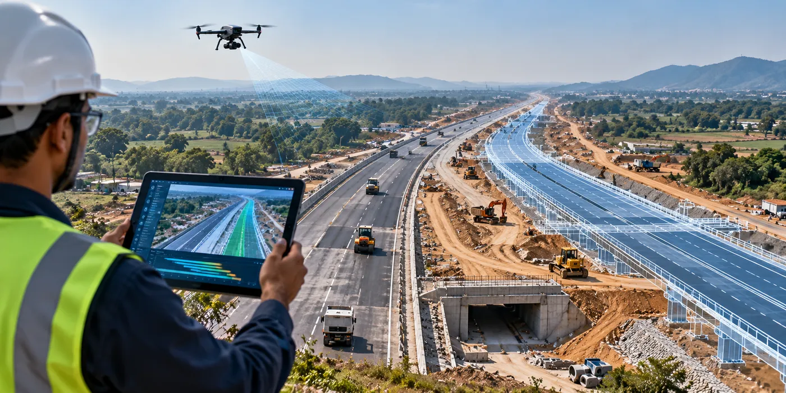

The Assignment
A major road infrastructure project required a digitally enabled project management approach to improve visibility and control over construction progress.
The objective was to implement a 5D BIM-based project management framework that could integrate design, construction progress, schedule and cost information while providing stakeholders with a single source of truth for project monitoring.
The project covered a 17 km alignment with a capital cost of approximately $838 million.
Our Approach
CS TECH Ai implemented a BIM-enabled Digital PMC framework combining digital project management, BIM, UAV-based progress monitoring and schedule and cost management.
The engagement included:
- Implementation of a Digital Project Management Platform supported by a Project Management Office (PMO)
- UAV survey of the entire corridor for real-time construction progress monitoring
- Development of 3D models for roads and associated infrastructure assets
- Integration of design information across models and drawings
- Linking of the 3D model with construction activities for 4D project monitoring
- Integration of schedule and cost information through 5D BIM
- Plan-versus-actual construction progress monitoring
- Centralisation of project information to create a single source of truth and avoid duplication
- Digital monitoring of project performance to support timely project management decisions
The integrated approach enabled physical progress captured from the corridor to be connected with the project's digital models, schedule and cost information, creating a more comprehensive view of project performance.